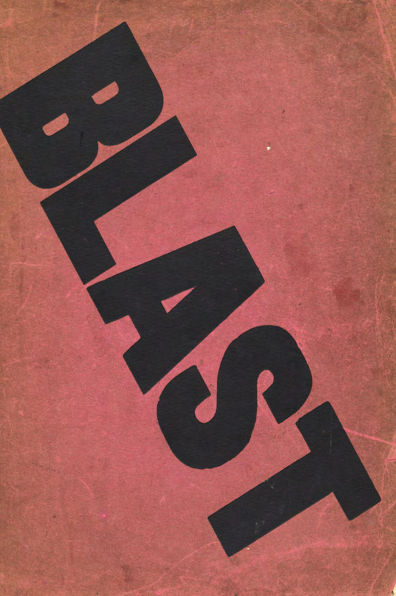
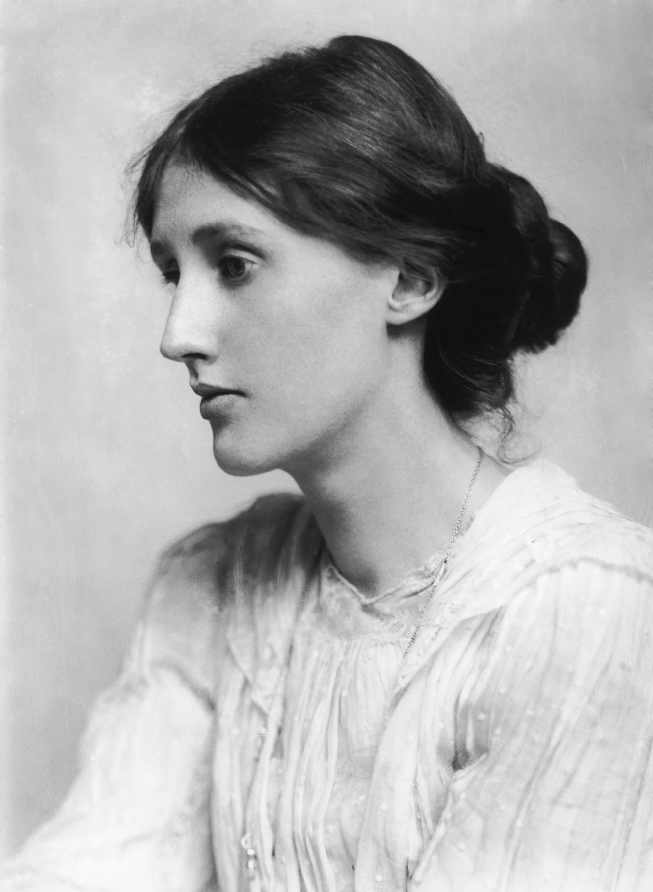
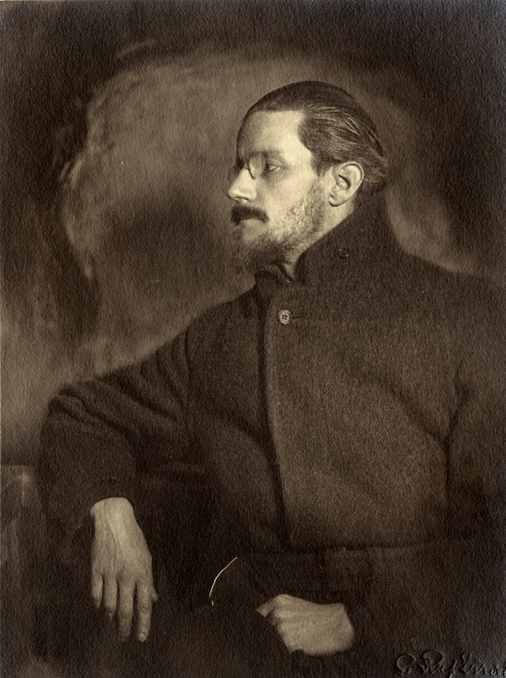
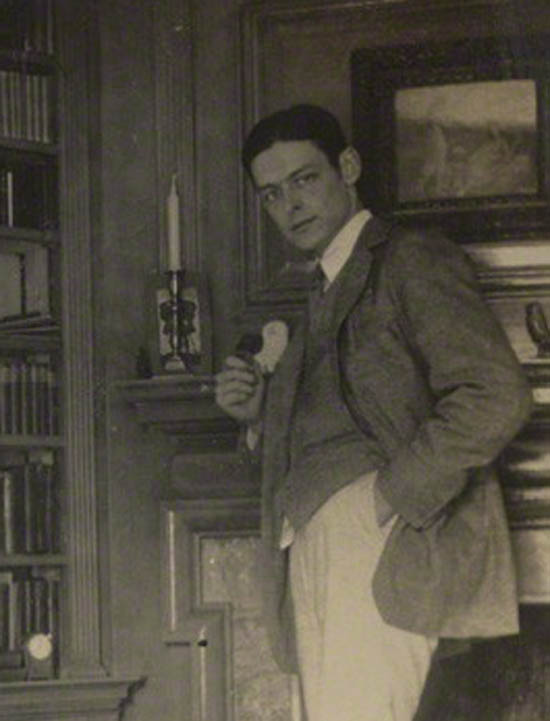
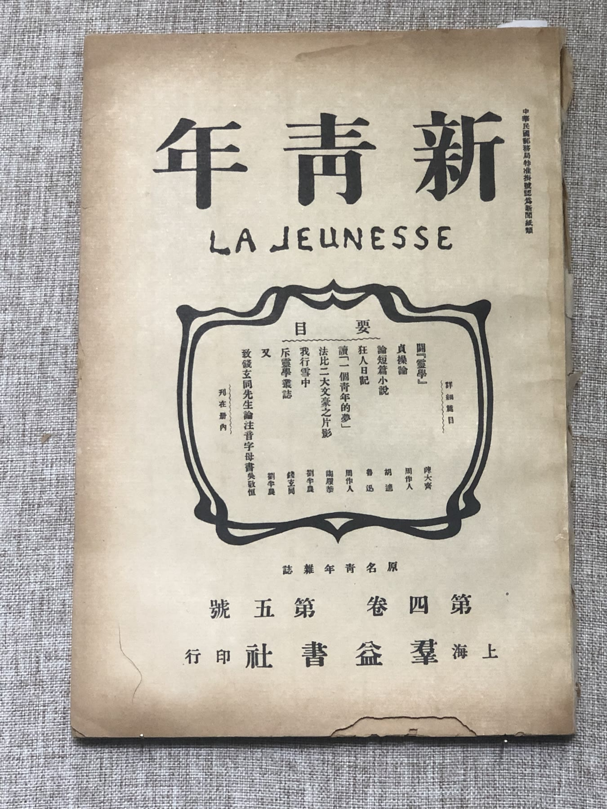
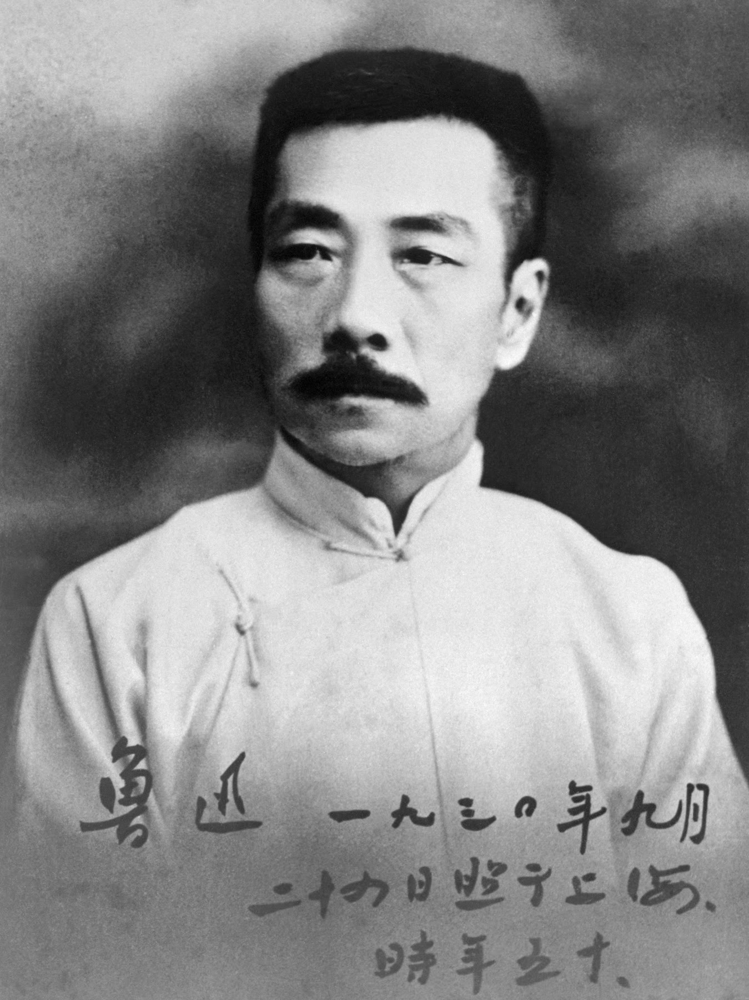

Thursday · Literature
(c. 1910–30): writers break the ordinary sentence
Woolf, Joyce, and Eliot changed how a novel or a poem could move through time. In the same years, the magazine and Lu Xun changed the written language of Chinese literature. They are contemporaneous events, not a required pairing.

{kind=link}
“” is a later classroom name for a cluster of European and American experiments with form, especially in the 1910s–20s. The people in this lesson did not agree they were in a school. This lesson looks out from London, Paris, and Dublin — the usual triangle — and then notices that 1918 in Shanghai is the same year, not a sidebar assigned to make the triangle look global.
Select any words, or tap a dotted term.
- 1914 Blast The Vorticist magazine appeared in London. Then the First World War arrived, which the magazine’s type had been rehearsing as noise.
- 1916 Portrait Joyce’s A Portrait of the Artist as a Young Man appeared in book form.
- 1918 狂人日記 / 新青年 Lu Xun’s “” was printed in , vol. 4, no. 5. became a literary event.
- 1919 May Fourth Student protests in Beijing against the Versailles settlement’s handling of Shandong. A political date that literary history also has to hold.
- 1922 Ulysses / Waste Land Joyce published in Paris through ; Eliot published in London. A year the syllabus never lets go.
- 1925–27 Woolf and To the Lighthouse. A day, a house, and a mind used as structure instead of a plot summary.
Before
Nineteenth-century narrative still walked the reader through time
The novel and the poem, in the late nineteenth century, could still pretend that time moved in a straight sequence. Even when they doubted that, they usually guided the reader from one event to the next. The decade before 1914 was already restless — free verse, impressionism, a city speeding up — but the First World War is the fact that later readers use to explain why that sequence broke. It is not the only fact. Cities, psychoanalysis, new print, and a reading public that included more women and more students were already changing who literature was for, and how it could be written.

{kind=link}
The era
The usual syllabus clusters around 1922; Shanghai had 1918
From London and Paris the syllabus bunches around 1922: from Sylvia Beach’s shop; in The Criterion and then as a book, cut by Ezra Pound. Woolf’s major novels come a few years later, but the method is in the same family — a day, a mind, a city, and a refusal to narrate as if a life were a plot summary. is the critic’s name for that method. The writers were trying to put on the page how attention actually moves: associations, sensory fragments, not always a tidy paragraph.

{kind=link}

The same years, not as a required pairing: in Shanghai, ( / ) was arguing that Chinese literature had to change its language. The May 1918 issue printed Lu Xun’s 「」. A reader in that story sees cannibalism in the classical tradition. In 1919, made the language argument a street protest as well as a magazine fight. This is not “the Asian Woolf.” It is a contemporaneous fight about vernacular writing, the nation, and who a written sentence is for — happening while Eliot was assembling fragments and Joyce was finishing a day in Dublin.

{kind=link}

{kind=link}
, in 1914, is the London version of a public manifesto. Two issues, then a war that killed some of the people who might have kept the magazine going. is often taught as quiet interior monologue. The pink cover is a reminder that it also wanted to be a poster.
People
Four writers, one decade, not one school
Virginia Woolf
1882–1941
(1925), To the Lighthouse (1927), A Room of One’s Own (1929). She used the sentence as a record of attention: what a mind notices in a day, not a plot summary of a life. is the address, not the whole explanation.
Beresford’s 1902 portrait, years before the novels.Public domain
James Joyce
1882–1941
Dublin on the page, published in Paris when London and New York houses were still afraid of the book. is one day (16 June 1904), a Homeric scaffolding, and a censorship history. was a bookshop that became a press.
Curran’s 1918 photograph, while the book was still unfinished.Public domain
T. S. Eliot
1888–1965
American-born, London-settled. is the poem the century assigned to 1922. The notes, the quotations, and Pound’s cuts are part of the object, not extras a teacher added later.
A study portrait from the early career.Public domain
Lu Xun 魯迅
1881–1936
Zhou Shuren. “,” then a body of stories, essays, and translations that made vernacular literary Chinese a fact. He is in this lesson because 1918 is 1918 — not because a Western syllabus needed an Asian twin.
Shanghai, 1930, later than the 1918 story.Public domain
A story
Two magazines, one decade, two different projects
Put next to . One is a London roar in English, two issues, then a war. The other is a Shanghai magazine that ran for years and printed a story that helped change the written language. They are not the same project. They share a decade in which people decided the old sentence was part of the problem. That is enough of a reason to put them in one lesson. It is not a reason to make one the key to the other.
After
How these books became a teaching canon
By the 1930s the experiments had become a canon in some places and a target in others. Woolf died in 1941; Joyce the same year; Lu Xun in 1936; Eliot lived long enough to become a monument. The after of is partly a teaching machine: 1922 as a fetish year, as a worksheet. The after is also every later writer who inherited the broken narrative sequence and had to decide whether to restore it.
If this archive later takes a Thursday to a different literature, it will not be to complete a set. It will be because another year also happened.
A question
A question to keep asking
When a syllabus says “1922,” whose 1918 was dropped to make the year look clean?
Fun fact
The Waste Land came with notes attached
When Eliot published in book form in 1922, he added notes. Some explain quotations; some are jokes; some have been treated as a key to a locked poem. He later said the notes began as a way to pad a slim book. Whether you believe the shrug or not, the notes are part of how the poem was sold and taught. A modernist fragment can arrive with its own apparatus.